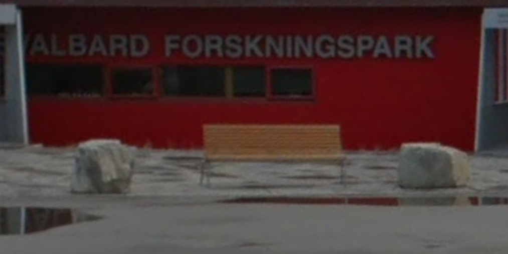

Exercise 2¶
Deadline
Please complete this exercise by the start of the next session.
Support
Please note that we only provide feedback and support for students enrolled in the course at the University Centre of Svalbard.
Today we focus on the reconstruction of a model of our own. Split up into separate tasks, we would like you to cover the following goals in groups of 3:
Image acquisition of an object of your choosing
SfM photogrammetry of the object you imaged
Archiving of the dataset in a standardised way
Documenting the processing steps.
The exercise also includes a deliverable, i.e., a set of requirements that are listed further below.
Assignment¶
It is now up to you to head out and acquire your own data set and process this by following the photogrammetry tutorial.
Suggested targets include:
the boulders in front of UNIS
small outcrops (ca. 5 m long, 5 m high)

Checklist and questions
[ ] Find a suitable target
[ ] Take photos of the target
[ ] … from two distances
[ ] … from two angles
[ ] … with photos having at least 80% overlap between them
[ ] Import the photos to your workstation…
[ ] … into the standardised folder structure
[ ] Create a textured model, saving project into the assigned folder
[ ] Export a processing report.
[ ] Fill out the deliverable
Deliverable¶
At the very least, the following should be completed prior to the start of the next session. Copy it over and send it in to the course responsible.
group:
name:
person1:
person2:
...
model:
place: # Where did you find your target?
region: # PICK: Hopen / Spitsbergen / Kong Karls Land / Edgeøya / Barentsøya / Tusenøyane / Nordaustlandet / Kvitøya / Prins Karls Forland / Bjørnøya / Other
data:
package_directory: # FOLDER DIR (absolute, where did you create the standard processing folder structure referred to in the [tutorial]{../l1/tutorial})
data_directory: #
overview_img: # FILE DIR (relative to package_directory)
model_crs: # INT EPSG number of model CRS
description_file: "" # create a simple text file with a description, and put it in the package_directory
metadata:
acquisition_date: # STRING DD.MM.YYYY
acquisition_type: # PICK Boat / UAV / Handheld / Combination
acquisition_user: # STRING Data collector
operator: # STRING Project owner
acquisition_distance2outcrop: # FLOAT, distance to outcrop
processing_user: # STRING in charge of processing
processing_images: # INT number of images used for the model
processing_calibration: # PICK: Built-in (GPS) / Marker (GPS) / Marker (dGPS) / None
processing_resolution: # FLOAT resolution in cm/pixel
processing_quality: # PICK bad / average / good / excellent / None
tag: # STRING, item separator: ;
category: # STRING, item separator: ;
Note
As for the metadata, you’ll only be able to fill out some of the metadata after fully implementing all the steps (and including up to) the meshing and texturing step.
Tips n Tricks¶
Image acquisition¶
Have a look at the [supplementary information](../supl/best practices “supl”) dealing with best practices in photogrammetry.
Folder structure¶
Make sure to create the right folder structure (see also the [tutorial]{../l1/tutorial “tutorial”}).
package_directory
| overview_img
| description.txt
├───data_directory
├───────100MEDIA (The folder in which all the images reside)
| DJI_0001.JPG
| DJI_0002.JPG
| ...
├───────gcps
| (We'll get back to this in a later session)
└───────metashape
metashape_project.psx
.metashape_project.files
metashape_processing_report
(optionally: metashape_project.log)